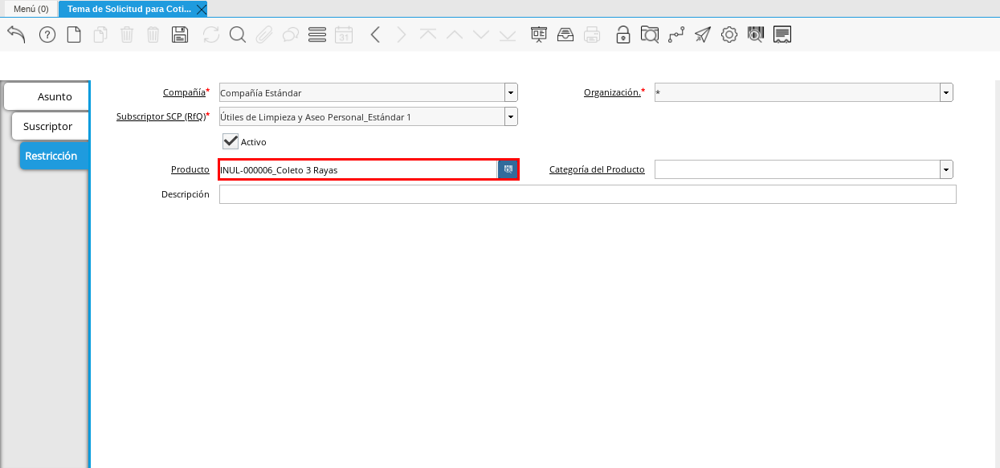

Crear Tema de Solicitud para Cotizar¶
Ubique y seleccione en el menú de ADempiere, la carpeta “Gestión de Compras”, luego seleccione la ventana “Tema de Solicitud para Cotizar”.
Imagen 1. Menú de ADempiere

Podrá visualizar la siguiente ventana con los registros que la empresa tiene de los diferentes temas de solicitud para cotizar. Seleccione el icono “Registro Nuevo” que se encuentra ubicado en la barra de herramientas de ADempiere y proceda al llenado de los campos correspondientes.
Imagen 2. Ventana Tema de Solicitud para Cotizar
Introduzca el nombre del tema de la solicitud para cotizar en el campo “Nombre”.
Imagen 3. Campo Nombre de Tema para Cotizar
Seleccione el icono “Guardar Cambios” ubicado en la barra de herramientas de ADempiere para guardar el registro de los campos.
Imagen 4. Icono Guardar Cambios


Pestaña Suscriptor¶
Seleccione la pestaña “Suscriptor” y proceda al llenado de los campos correspondientes.
Imagen 5. Pestaña Suscriptor
Note
Esta pestaña permite registrar los diferentes socios del negocio proveedores que surten a la empresa de productos o servicios con relación al tema ingresado anteriormente.
Seleccione el socio del negocio proveedor del producto o servicio referente al tema ingresado anteriormente.
Imagen 6. Campo Socio del Negocio Proveedor
Seleccione la dirección del socio del negocio proveedor en el campo “Dirección del Socio del Negocio”.
Imagen 7. Campo Dirección del Socio del Negocio Proveedor
Seleccione el icono “Guardar Cambios” ubicado en la barra de herramientas de ADempiere para guardar el registro de los campos.
Imagen 8. Icono Guardar Cambios
Note
Para registrar otro socio del negocio proveedor, debe seleccionar el icono “Registro Nuevo” ubicado en la barra de herramientas de ADempiere y repetir el procedimiento realizado antes. Para ejemplificar el caso se registran tres (3) socios del negocio que son “Estándar 1”, “Estándar 2” y “Estándar 3”.
Podrá visualizar en la parte inferior derecha de la ventana, el número de registros que posee la ventana.
Imagen 9. Registros de la Pestaña Suscriptor


Pestaña Restricción¶
Seleccione la pestaña “Restricción” y proceda al llenado de los campos correspondientes.
Imagen 10. Pestaña Restricción
Note
Esta pestaña permite registrar las diferentes categorías, productos o servicios que la empresa requiere que el proveedor incluya en la cotización.
Ejemplo:
Se tienen tres (3) categorías (Papelería, Uniformes y Servicios) dentro de una misma solicitud
Suministro de Oficina (Papelería)
Suministro de Dotaciones (Uniformes)
Comercialización Nacional (Servicios)
Para establecer que la cotización se requiere por categoría de producto o servicio, se debe agregar en la pestaña restricción del suscriptor, específicamente en el campo “Categoría del Producto”, la categoría de productos que contiene los servicios o productos que requiere cotizar.
Seleccione el producto a restringir en el campo “Producto”. Para ejemplificar el caso de la restricción de productos al proveedor “Estándar 1, es utilizado el producto “Coleto”.

Imagen 11. Campo Producto
Seleccione el icono “Guardar Cambios” ubicado en la barra de herramientas de ADempiere para guardar el registro de los campos.
Imagen 12. Icono Guardar Cambios
Note
Para registrar otro producto, servicio o categoría debe seleccionar el icono “Registro Nuevo” ubicado en la barra de herramientas de ADempiere y repetir el procedimiento realizado antes.


Solicitud para Cotización¶
Ubique y seleccione en el menú de ADempiere, la carpeta “Gestión de Compras”, luego seleccione la ventana “Solicitud para Cotización”.
Imagen 13. Menú de ADempiere

Note
ADempiere permite que la solicitud para cotización sea realizada de tres (3) formas, definidas por el campo “Tipo SCP (RfQ)”.
Para ejemplificar el registro del presente documento, es presentado un caso por cada forma de cotización.
Caso 1: Solicitud para Cotización por Tipo Cotiza Líneas Seleccionadas¶
Pestaña SCP (RfQ)¶
Podrá visualizar la siguiente ventana con los registros de solicitud de cotización que la empresa tiene. Seleccione el icono “Registro Nuevo” que se encuentra ubicado en la barra de herramientas de ADempiere y proceda al llenado de los campos correspondientes.
Imagen 14. Ventana Solicitud para Cotización
Seleccione en el campo “Organización”, la organización para la cual esta realizando la solicitud para cotización.
Imagen 15. Campo Organización
Introduzca el nombre de referencia de la solicitud para cotización en el campo “Nombre”.
Imagen 16. Campo Nombre
Seleccione en el campo “Agente Comercial”, el agente comercial que esta solicitando la cotización de productos o servicios.
Imagen 17. Campo Agente Comercial
Seleccione en el campo “Asunto SCP (RfQ), el tema registrado anteriormente que categoriza la lista de proveedores ofertantes.
Imagen 18. Campo Asunto SCP (RfQ)
Seleccione en el campo “Tipo SCP (RfQ)”, el tipo de cotización para que la solicitud sea cotizada en base a lo seleccionado. Para este ejemplo es utilizada la cotización por líneas seleccionadas.
Imagen 19. Campo Tipo SCP (RfQ)
Note
La forma “Cotiza Líneas Seleccionadas”, realiza la cotización por los productos o servicios ingresados en cada línea de la pestaña “Línea”.
Seleccione en el campo “Fecha de Respuesta”, la fecha límite de espera de respuesta de los proveedores agrupados en el tema de la solicitud para cotizar.
Imagen 20. Campo Fecha de Respuesta
Seleccione el icono “Guardar Cambios” ubicado en la barra de herramientas de ADempiere para guardar el registro de los campos.
Imagen 21. Icono Guardar Cambios


Pestaña Línea¶
Seleccione la pestaña “Línea” y proceda al llenado de los campos correspondientes.
Imagen 22. Pestaña Línea
Seleccione en el campo “Producto”, el producto que la empresa requiere que los socios del negocio proveedores coticen.
Imagen 23. Campo Producto
Seleccione el icono “Guardar Cambios” ubicado en la barra de herramientas de ADempiere para guardar el registro de los campos.
Imagen 24. Icono Guardar Cambios
Note
Esta pestaña permite registrar los diferentes productos o servicios que la empresa solicita que los socios del negocio proveedores coticen.
Para registrar otro producto, debe seleccionar el icono “Registro Nuevo” ubicado en la barra de herramientas de ADempiere y repetir el procedimiento realizado antes. Para ejemplificar el caso se registran tres (3) productos que son “Desinfectante”, “Cera” y “Desengrasante”.


Pestaña Cantidad¶
Seleccione la pestaña “Cantidad” y proceda al llenado de los campos correspondientes.
Imagen 25. Pestaña Cantidad
Seleccione en el campo “UM”, la unidad de medida que la empresa requiere que los socios del negocio coticen el producto.
Imagen 26. Campo Unidad de Medida del Producto o Servicio
Seleccione en el campo “Cantidad”, la cantidad de productos que la empresa requiere que los socios del negocio coticen en la unidad de medida seleccionada.
Imagen 27. Campo Cantidad del Producto o Servicio
Seleccione el icono “Guardar Cambios” ubicado en la barra de herramientas de ADempiere para guardar el registro de los campos.
Imagen 28. Icono Guardar Cambios
Note
Esta pestaña se debe seleccionar y realizar el proceso explicado antes, por cada registro que tenga la pestaña “Línea”.


Pestaña SCP (RfQ)¶
Regrese a la ventana principal “SCP (RfQ)” y seleccione la opción “Crea e Invita”, para enviar la notifiación vía correo electrónico a los socios del negocio proveedores agrupados en el tema de solicitud realizado anteriormente.
Imagen 29. Opción Crea e Invita
Podrá visualizar la siguiente ventana de la opción “Crea e Invita”, donde debe tildar el checklist “Envía invitación de SCP (RfQ) a los proveedores” y la opción “OK”.
Imagen 30. Ventana Crea e Invita


Caso 2: Solicitud para Cotización por Tipo Cotiza Sólo el Total¶
Realice el procedimiento regular para generar una “Solicitud para Cotización” explicado anteriormente, con la diferencia de que debe seleccionar en el campo “Tipo SCP (RfQ)”, la opción “Cotiza Sólo el Total”. Al culminar todo el procedimiento hasta el envío de la notificación a los socios del negocio proveedores, el registro quedaría de la siguiente manera.
Imagen 31. Registro de la Solicitud para Cotización por Tipo Cotiza Sólo el Total
Note
La forma “Cotiza Sólo el Total”, realiza la cotización sumando el total de cada línea de la solicitud.

Caso 3: Solicitud para Cotización por Tipo Cótiza todas las Líneas¶
Realice el procedimiento regular para generar una “Solicitud para Cotización” explicado anteriormente, con la diferencia de que debe seleccionar en el campo “Tipo SCP (RfQ)”, la opción “Cotiza todas las Líneas”. Al culminar todo el procedimiento hasta el envío de la notificación a los socios del negocio proveedores, el registro quedaría de la siguiente manera.
Imagen 32. Registro de la Solicitud para Cotización por Tipo Cotiza todas las Líneas
Note
La forma “Cotiza todas las Líneas”, realiza la cotización comparando la igualdad que existe entre la cantidad de productos o servicios solicitados y la cantidad de productos o servicios ofertados por el proveedor.

Solicitud para Cotización con Respuesta¶
Ubique y seleccione en el menú de ADempiere, la carpeta “Gestión de Compras”, luego seleccione la ventana “Solicitud para Cotización”.
Imagen 33. Menú de ADempiere
Podrá visualizar la ventana “Solicitud para Cotización con Respuesta”, con los registros de solicitud de cotización creados luego de seleccionar la opción “Crea e Invita”, de la ventana “Solicitud para Cotización”.
Imagen 34. Ventana de Solicitud para Cotización con Respuesta
Note
ADempiere crea tantos registros de solicitud de cotización con respuesta como proveedores tenga la solicitud de cotización realizada por la empresa. Cada registro creado de una solicitud de cotización contiene su mismo número de documento en el campo “SCP (RfQ)”.
Puede cambiar la vista de la ventana con ayuda del icono “Cambiar mono/multi registro”, ubicado en la barra de herramientas de ADempiere. De esta manera, puede visualizar en la pestaña “Línea Respuesta” los registros de productos por proveedor que posee la solicitud de cotización con respuesta.
Ubique en el registro de la solicitud de cotización con respuesta, el socio del negocio proveedor para cargar a ADempiere la respuesta de cotización por producto.
Imagen 35. Registro por Socio del Negocio Proveedor


Caso 1: Solicitud para Cotización (Con Respuesta) por Tipo Cotiza Líneas Seleccionadas¶
Pestaña Línea Respuesta¶
Seleccione la pestaña “Línea Respuesta” para navegar entre los registros de productos o servicios que fueron cotizados al socio del negocio proveedor.
Imagen 36. Pestaña Línea Respuesta
Note
Puede visualizar en la parte inferior derecha de la pestaña, la cantidad de registros de productos cotizados que posee el socio del negocio proveedor.
Ubique el registro del producto para cargar la respuesta del socio del negocio proveedor.
Imagen 37. Registro del Producto Desinfectante


Pestaña Cantidad Respuesta¶
Seleccione la pestaña “Cantidad Respuesta” para cargar el precio cotizado por el socio del negocio proveedor.
Imagen 38. Pestaña Cantidad Respuesta
Introduzca en el campo “Precio”, la respuesta del precio cotizado por el socio del negocio proveedor.
Imagen 39. Campo Precio
Seleccione el icono “Guardar Cambios” ubicado en la barra de herramientas de ADempiere para guardar el registro de los campos.
Imagen 40. Icono Guardar Cambios
Note
Esta pestaña se debe seleccionar y realizar el proceso explicado antes, por cada registro que tenga la pestaña “Línea Respuesta”.


Pestaña Respuesta¶
Regrese a la ventana principal “Respuesta” y seleccione la opción “Completar Verificación”, para completar el documento de solicitud de cotización con respuesta.
Imagen 41. Opción Completar Verificación
Podrá visualizar la siguiente ventana de la opción “Completar Verificación”, donde debe seleccionar la opción “OK” para completar el documento.
Imagen 42. Ventana Completar Verificación


Podrá visualizar que el checklist “Completo” se tilda automáticamente al completar el documento.
Imagen 43. Checklist Completo

Note
Repita en cada uno de los registros de socios del negocio proveedores de la “Solicitud para Cotización (Con Respuesta) por Tipo Cotiza Líneas Seleccionadas”, el procedimiento explicado anteriormente.
Consultar el Reporte de Respuesta de Solicitud para Cotización¶
Al consultar la solicitud de cotización con respuesta de “Caso 1: Solicitud para Cotización (Con Respuesta) por Tipo Cotiza Líneas Seleccionadas”, se obtiene el siguiente reporte.
Imagen 44. Reporte de Solicitud de Cotización con Respuesta Caso 1

Caso 2: Solicitud para Cotización (Con Respuesta) por Tipo Cotiza Sólo el Total¶
Realice el procedimiento regular para generar una “Solicitud para Cotización con Respuesta” explicado anteriormente.
Imagen 45. Registro de la Solicitud para Cotización (Con Respuesta) por Tipo Cotiza Sólo el Total

Consultar el Reporte de Respuesta de Solicitud para Cotización¶
Al consultar la solicitud de cotización con respuesta de “Caso 2: Solicitud para Cotización (Con Respuesta) por Tipo Cotiza Sólo el Total”, se obtiene el siguiente reporte.
Imagen 46. Reporte de Solicitud de Cotización con Respuesta Caso 2

Caso 3: Solicitud para Cotización (Con Respuesta) por Tipo Cótiza todas las Líneas¶
Realice el procedimiento regular para generar una “Solicitud para Cotización con Respuesta” explicado anteriormente.
Imagen 47. Registro de la Solicitud para Cotización (Con Respuesta) por Tipo Cótiza todas las Líneas

Consultar el Reporte de Respuesta de Solicitud para Cotización¶
Al consultar la solicitud de cotización con respuesta de “Caso 3: Solicitud para Cotización (Con Respuesta) por Tipo Cótiza todas las Líneas”, se obtiene el siguiente reporte.
Imagen 48. Reporte de Solicitud de Cotización con Respuesta Caso 3

Valuación de Respuestas de la Solicitud para Cotización¶
Caso 1: Solicitud para Cotización por Tipo Cotiza Líneas Seleccionadas¶
Ubique en la ventana “Solicitud para Cotización” el registro del “Caso 1: Solicitud para Cotización por Tipo Cotiza Líneas Seleccionadas” y seleccione la opción “Valuación de Respuestas”.
Imagen 49. Registro del Caso 1.

Podrá visualizar la ventana “Validación de Respuestas” donde debe seleccionar la opción “OK”.
Imagen 50. Ventana Validación de Respuesta

Caso 2: Solicitud para Cotización por Tipo Cotiza Sólo el Total¶
Ubique en la ventana “Solicitud para Cotización” el registro del “Caso 2: Solicitud para Cotización por Tipo Cotiza Sólo el Total” y seleccione la opción “Valuación de Respuestas”.
Imagen 51. Registro del Caso 2

Podrá visualizar la ventana “Validación de Respuestas” donde debe seleccionar la opción “OK”.
Imagen 52. Ventana Validación de Respuesta
Caso 3: Solicitud para Cotización por Tipo Cótiza todas las Líneas¶
Ubique en la ventana “Solicitud para Cotización” el registro del “Caso 3: Solicitud para Cotización por Tipo Cótiza todas las Líneas” y seleccione la opción “Valuación de Respuestas”.
Imagen 53. Registro del Caso 3

Podrá visualizar la ventana “Validación de Respuestas” donde debe seleccionar la opción “OK”.
Imagen 54. Ventana Validación de Respuesta
Consulta de Ganador Seleccionado en la Solicitud para Cotización con Respuesta¶
Caso 1: Solicitud para Cotización (Con Respuesta) por Tipo Cotiza Líneas Seleccionadas¶
Ubique en la ventana “Solicitud para Cotización (Con Respuesta)” el registro del “Caso 1: Solicitud para Cotización por Tipo Cotiza Líneas Seleccionadas” y navegue entre los registros de la pestaña “Línea Respuesta” de cada socio del negocio proveedor para buscar el registro que tenga el checklist “Ganador Seleccionado” tildado de la siguiente manera.
Imagen 55. Checklist Ganador Seleccionado

Caso 2: Solicitud para Cotización (Con Respuesta) por Tipo Cotiza Sólo el Total¶
Ubique en la ventana “Solicitud para Cotización (Con Respuesta)” el registro del “Caso 2: Solicitud para Cotización (Con Respuesta) por Tipo Cotiza Sólo el Total” y navegue entre los registros de cada socio del negocio proveedor para buscar el registro que tenga el checklist “Ganador Seleccionado” tildado de la siguiente manera.
Imagen 56. Checklist Ganador Seleccionado

Caso 3: Solicitud para Cotización (Con Respuesta) por Tipo Cótiza todas las Líneas¶
Ubique en la ventana “Solicitud para Cotización (Con Respuesta)” el registro del “Caso 3: Solicitud para Cotización (Con Respuesta) por Tipo Cótiza todas las Líneas” y navegue entre los registros de cada socio del negocio proveedor para buscar el registro que tenga el checklist “Ganador Seleccionado” tildado de la siguiente manera.
Imagen 57. Checklist Ganador Seleccionado

Crear Orden de Compra desde Solicitud de Cotización¶
Caso 1: Solicitud para Cotización por Tipo Cotiza Líneas Seleccionadas¶
Ubique en la ventana “Solicitud para Cotización” el registro del “Caso 1: Solicitud para Cotización por Tipo Cotiza Líneas Seleccionadas” y seleccione la opción “Crear Orden de Compra”, ubicada en el icono “Proceso” de la barra de herramientas de ADempiere.
Imagen 58. Icono Proceso
Podrá visualizar la ventana “Crea Orden de Compra” donde debe seleccionar el tipo de documento a generar en el campo “Tipo de Documento” y la opción “OK”.
Imagen 59. Ventana Crea Orden de Compra


ADempiere genera en la ventana “Orden de Compra”, tantas órdenes de compra como ganadores seleccionados existan. En el ejemplo de este caso existen 2 ganadores seleccionados que son los socios “Estándar 1” y “Estándar 2”.
Imagen 60. Orden de Compra del Socio del Negocio Proveedor Estándar 1.
Imagen 61. Orden de Compra del Socio del Negocio Proveedor Estándar 2.


Caso 2: Solicitud para Cotización (Con Respuesta) por Tipo Cotiza Sólo el Total¶
Realice el procedimiento regular para generar una “Orden de Compra” explicado anteriormente.
Imagen 62. Registro de Orden de Compra del Caso 2
Caso 3: Solicitud para Cotización (Con Respuesta) por Tipo Cótiza todas las Líneas¶
Realice el procedimiento regular para generar una “Orden de Compra” explicado anteriormente.
Imagen 63. Registro de Orden de Compra del Caso 3